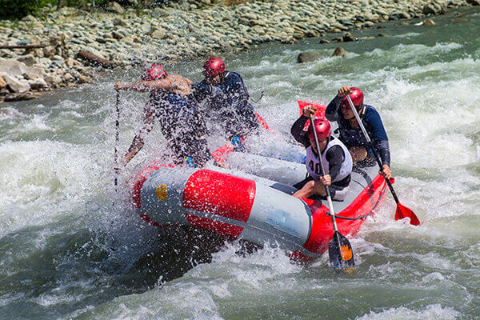
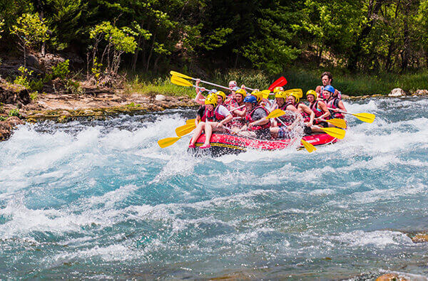
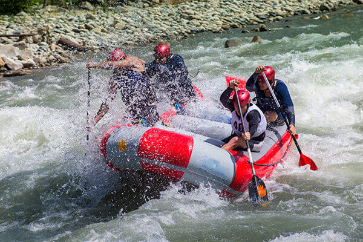
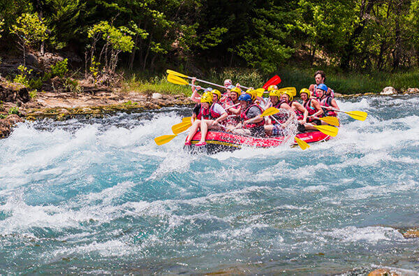

White Water Rafting purpose is to create an immersive and user-friendly online platform that showcases the thrill of the company, while providing a seamless experience for customers to plan and book their adventures. The main message is that rafting is a fun activity and to come and experience it for yourself and bring your family.
 


